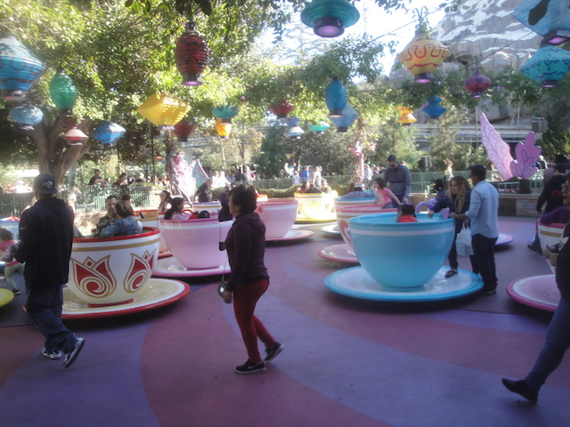
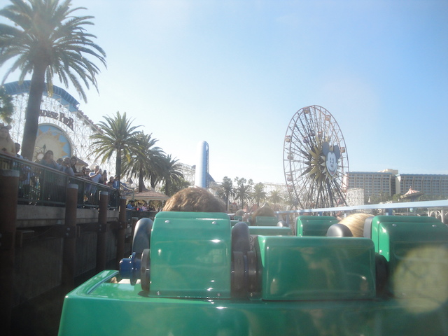
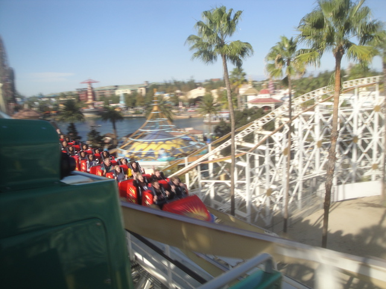
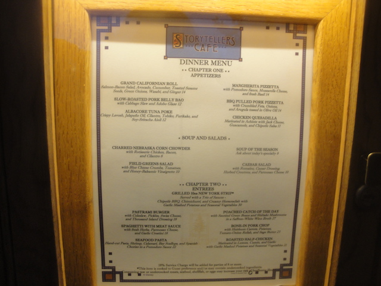

| |
Incrediblecoasters Winter 2017
Six Flags Magic Mountain Disneyland Resort
And we're back at the Disneyland Resort. We generally only come once a year now. So there's plenty of new stuff to check out as well as some stuff to ride before it gets redone. Anyways, here's some Jungle Cruise fun.
Seriously. Don't f*ck with hippos. They will murder your ass.
"Why aren't these people celebrating Christmas!? Don't they know that it's December!? The War on Christmas continues!" =P
OK. We gotta get on Pirates of the Carribean before more Disney modifications come to this ride.
"Arr. There be changes coming to this ride. And they got nothing to do with Johnny Depp."
The redhead will be leaving Pirates of the Carribean. The character nobody gave a sh*t about, suddenly everyone is freaking out over her departure. They're getting rid of her because Disney doesn't want a scene of women being sold off as sex slaves in one of their main attractions. So instead, all the pirates will be betting on treasure, instead of women. And the Redhead will be one of those betting pirates. And a lot of people are upset about this. Primarily for two reasons. #1. "HOW DARE DISNEY CHANGE ANYTHING! THESE RIDES MUST BE PRESERVED AND NEVER CHANGED IN ANY WAY!". #2. "F*CK POLITCAL CORRECTNESS! IT RUINS EVERYTHING!". Look, I get why Disney made this change. It's perfectly logical. Now, I'm not upset about the change as, like I said. Nobody rode Pirates and got in those boats saying to themselves, "The rest of the ride is sh*t! I hate the drops, the pirates, the skeletons, the cannon battles, the prisoners trying to get the keys from the dog, and all that! F*ck all that! The only reason I'm riding is for the redhead!". I don't care how loudly you're screaming about this change. You know that's not true, and you know that you like the ride for so much more than just the redhead scene. But I'm going to be honest, and this might be controversial for some people, but I don't think this change was necesarry. I mean, do you honestly think people were coming away from Pirates of the Carribean thinking that sexual slavery was OK? Did anyone seriously learn how to treat women by riding Pirates of the Carribean? Look. I'm a progressive. But I don't think this was a super urgent dire thing that Disney had to remove ASAP. Then again, the past two years, we have had society break down to the point where people now think that it's OK to be a Nazi. I think those same monsters arguing for a White Ethnostate likely would make an argument for sexual slavery. Excuse me. I need to have a drink and weep for our species.
Oh look. The Anti-PC crowd is throwing another tantrum over the Redhead leaving. =P
Well, at least this ride isn't changing (aside from it's yearly Nightmare Before Christmas makeover). So Disney purists should be happy about that.
I'm not the biggest fan of Nightmare Before Christmas. But it's a good movie, and at this point, a holiday classic. And I'm still stunned that at this point, most of the rest of my family hasn't seen the movie and aren't interested in seeing it despite it being a classic (and now several of my freinds are having heart attacks at reading this).
♫What's this? What's this? This mountain curls and unfolds!♫ Seriously, what's this? I genuinely am not sure what that weird hill is.
Hmm. I gotta try one of those Smores Churros one of these days.
HOLY SH*T!!! With that line, there's no way we're getting on Space Mountain! Right? Right?
WRONG! This Space Mountain ride was made possible thanks to the brand new Space Mountain single riders line. I LOVE this thing and am so happy that they made another single riders line, as they make your day SO MUCH BETTER!

Hmm. We still got some time before our fast passes are good. Hey. Might as well give the Mad Tea Party a spin. It's been a while.
 All right. Our fastpass says its time to get in line.
All right. Our fastpass says its time to get in line.
 Ooh! Disneyland is doing more construction. =)
Ooh! Disneyland is doing more construction. =)
 "I thought 2016 was as bad as it could get. But as 2017 went on and on, it just got worse and worse! I've had it!"
"I thought 2016 was as bad as it could get. But as 2017 went on and on, it just got worse and worse! I've had it!"
 Who knew a mine train could be this fun!
Who knew a mine train could be this fun!
Guess Disney couldn't do any extensive parades this year and had to resort to just using the local marching band.
Ugh. Who threw all their crap on that tree!?
"Hey guys. I know you think it's too cold to ride my ride. But would you reconsider if I gave you this tacky sweater to keep you warm before riding?"
Hey. Burger Invasion may be gone. But you can still go to Corn Dog Castle for all your corn dog needs. =)
So happy to see more stuff with Jose and Panchito.
I'm assuming it's closed for the Pixar Pier makeover. Hmm. I wonder what they're going to retheme it to? *gasp* Theme it to Ratatouille! Remy dashing back and forth in a kitchen! Perfect for a Wild Mouse! YES!!! YES!!! DO THIS DISNEY!!!

Oh yeah. Pixar Pier! Better get your last ride on California Screamin before it gets Pixarified.

HELLOS!!!
You know. I loved the Tortilla Tour that they had years ago. But they replaced it with a Sourdough Bread tour a while back, and I had never checked it out. Might as well see how that is.
Hmm. Watch a video and get a bread sample. Yeah. This is definetly bringing back memories.
It was fun and all. But after visiting the actual Boudin Bakery in San Francisco, it's not nearly as cool.
You know the Small World song is now stuck in your head. Your welcome. >=)
 Wow. It has been a while since we've done Radiator Springs Racers. It's about time that we get on that again.
Wow. It has been a while since we've done Radiator Springs Racers. It's about time that we get on that again.
 "For the millionth time, we're sorry that Cars 2 exists. We get it. We made a bad movie. Can you please just let it go already?"
"For the millionth time, we're sorry that Cars 2 exists. We get it. We made a bad movie. Can you please just let it go already?"
 I love all the rides that use this technology.
I love all the rides that use this technology.
I gotta see Coco sometime. I keep hearing great things about it.
 Oh hey! Guardians of the Galaxy opened back up. I know that I complained a lot about Guardians of the Galaxy last year. Well now I get to see for myself if this is good and I was wrong, or if I was right and this was a bad move.
Oh hey! Guardians of the Galaxy opened back up. I know that I complained a lot about Guardians of the Galaxy last year. Well now I get to see for myself if this is good and I was wrong, or if I was right and this was a bad move.
As far as theming goes, I prefer the original. As I said this last year, and I stand by it. The Twilight Zone > Guardians of the Galaxy. The argument of it not fitting in, well...true. But I have a feeling it'll soon fit in as the Hollywood area will probably go and be replaced by some Marvel land, in which, it'd fit in just fine. But I still prefer the Twilight Zone theme. It's story made much more sense. The Guardians of the Galaxy theme, it doesn't really work for the dark ride. It just sort of is there in the ride. But on the bright side, the ride itself is MUCH better. No seriously. The actual drop program is much better. They do what they do in Florida, and have random drop sequences. And considering this one we got just launched up like a Space Shot, it really caught me off guard. And it's longer. You have more drops, more shooting up, more airtime, and you don't know when it's going to end. The Guardians of the Galaxy characters just pop on by in the middle of the ride to check on you or something. Maybe it has a tie in to the sequel and I'd get it if I saw the 2nd one (Only saw the first Guardians of the Galaxy so far). And I was having a blast. So in a way, despite me not liking the theme as much, I prefer the makeover, simply for having a MUCH better drop sequence. Though hey. Florida gets the best of both worlds. =)
We're dogs out in space. We're zooming along protecting the canine race.
So Celeste always hated Tower of Terror (I still don't get how she can be fine on Coaster, one of the coasters with the strongest, most extreme ejector air ever, but Tower of Terror was too much). But she knew that it was redone for Guardians of the Galaxy and thought it would be worth trying again. But as you can see from the photo, she clearly did not like it. =)
I'm still a badass at Toy Story Mania.
 OK. Might as well do California Screamin again before it turns into the Incredibles coaster.
OK. Might as well do California Screamin again before it turns into the Incredibles coaster.
 Bye Paradise Pier. Looking foreward to seeing how you turn out when you become Pixar Pier.
Bye Paradise Pier. Looking foreward to seeing how you turn out when you become Pixar Pier.
Man. The Christmas Tree in the Grand Californian really looks nice.
Yeah. We're not doing a trip to Disneyland without stopping by Storytellers Cafe.
Wrong.

For a change, we decided to do Storytellers Cafe for dinner instead.
I really like Storytellers for lunch, and dinner is even better. You get more options, many of which are better than the lunch options.
Ooh. I like the Christmas decorations for that theater.
All right. Heading back into Disneyland to check it out a little bit.
Didn't do Small World thanks to time. But it still looks pretty.
And finally, let's close out on this bakery and their really good cookies. Another Disneyland visit was a big success and it was good to see everything they were up to. Looking foreward to seeing all the new stuff they'll be up to for next year.
Home
|